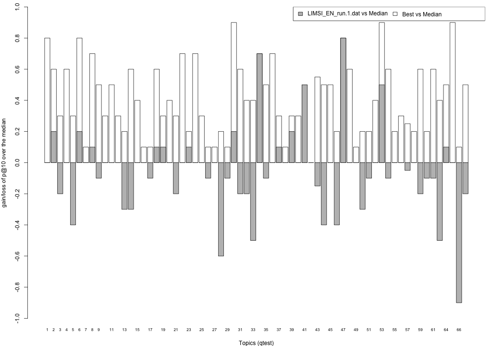
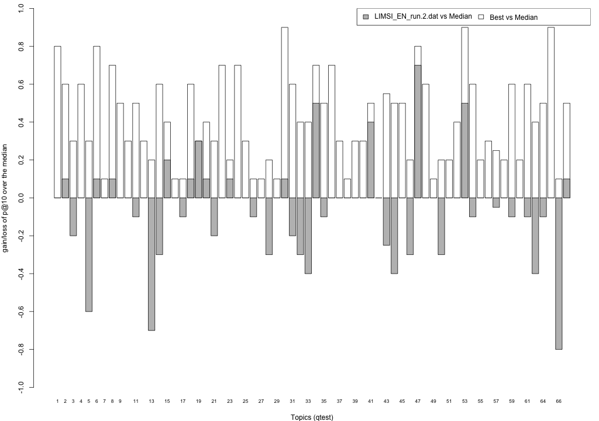
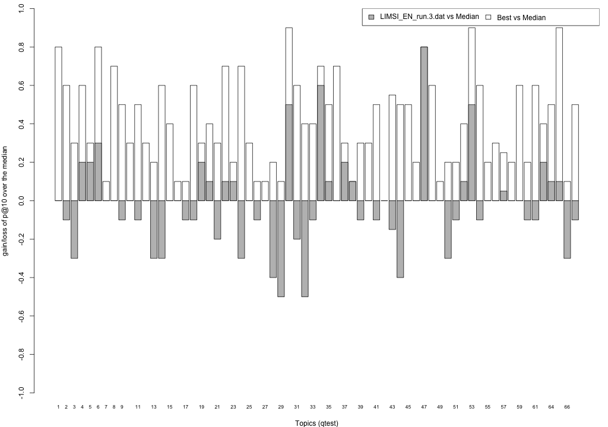

Share/CLEF eHealth 2015 TASK 2 Results - LIMSI_EN_run
This page summarises the results obtained from your submissions. Here, you can find the mean performance of your submissions, for all standard trec_eval measures and for nDCG at different ranks. For this first year, the Share/CLEF eHealth 2015 TASK 2 built result pools from your submissions considering the top 10 documents ranked by your baseline system (run 1), and the two highest priority runs (run 2 and 3); thus all remaining runs were not sampled to form the assessment pool. This was because, unlike in previous years, submissions were greatly differing between each other, and thus lead to very large (and different) pools. As a consequence:
- the primary measure for this year is precision at 10 (P@10),
- the secondary measure is Normalised Discounted Cumulative Gain at rank 10 (ndcg_cut_10).
Relevance assessments are distributed along with this webpage and are also available from the task website. Assessors judged relevance according to a three point scale: Not Relevant (label 0), Somewhat Relevant (label 1), Highly Relevant (label 2). When computing binary relevance measures (e.g. P@10 and MAP), we mapped label 0 to not relevant, and labels 1 and 2 to relevant; this is encoded in the binary qrels named qrels.clef2015.test.bin.txt. Graded relevance assessments are contained in the qrels.clef2015.test.graded.txt file.
Evaluation with standard trec_eval metrics
These results have been obtained with the binary relevance assessment, i.e. qrels.clef2015.test.bin.txt, and trec_eval 9.0 as distributed by NIST. Trec_eval was ran as follows:
./trec_eval -c -M1000 qrels.clef2015.test.bin.txt runName
LIMSI_EN_run.1.dat
runid all LIMSIrun1 num_q all 66 num_ret all 65733 num_rel all 1972 num_rel_ret all 1114 map all 0.0886 gm_map all 0.0155 Rprec all 0.1112 bpref all 0.1945 recip_rank all 0.3579 iprec_at_recall_0.00 all 0.3897 iprec_at_recall_0.10 all 0.2526 iprec_at_recall_0.20 all 0.1503 iprec_at_recall_0.30 all 0.1065 iprec_at_recall_0.40 all 0.0821 iprec_at_recall_0.50 all 0.0695 iprec_at_recall_0.60 all 0.0496 iprec_at_recall_0.70 all 0.0301 iprec_at_recall_0.80 all 0.0153 iprec_at_recall_0.90 all 0.0019 iprec_at_recall_1.00 all 0.0013 P_5 all 0.2424 P_10 all 0.2318 P_15 all 0.2040 P_20 all 0.1712 P_30 all 0.1379 P_100 all 0.0694 P_200 all 0.0483 P_500 all 0.0278 P_1000 all 0.0169
LIMSI_EN_run.2.dat
runid all LIMSIrun2 num_q all 66 num_ret all 66000 num_rel all 1972 num_rel_ret all 1076 map all 0.0836 gm_map all 0.0139 Rprec all 0.1078 bpref all 0.1891 recip_rank all 0.3408 iprec_at_recall_0.00 all 0.3777 iprec_at_recall_0.10 all 0.2434 iprec_at_recall_0.20 all 0.1368 iprec_at_recall_0.30 all 0.0974 iprec_at_recall_0.40 all 0.0782 iprec_at_recall_0.50 all 0.0661 iprec_at_recall_0.60 all 0.0479 iprec_at_recall_0.70 all 0.0320 iprec_at_recall_0.80 all 0.0143 iprec_at_recall_0.90 all 0.0019 iprec_at_recall_1.00 all 0.0013 P_5 all 0.2333 P_10 all 0.2303 P_15 all 0.1899 P_20 all 0.1735 P_30 all 0.1348 P_100 all 0.0647 P_200 all 0.0445 P_500 all 0.0258 P_1000 all 0.0163
LIMSI_EN_run.3.dat
runid all LIMSIrun3 num_q all 66 num_ret all 66000 num_rel all 1972 num_rel_ret all 1187 map all 0.0839 gm_map all 0.0115 Rprec all 0.0998 bpref all 0.2016 recip_rank all 0.3484 iprec_at_recall_0.00 all 0.3968 iprec_at_recall_0.10 all 0.2620 iprec_at_recall_0.20 all 0.1455 iprec_at_recall_0.30 all 0.0949 iprec_at_recall_0.40 all 0.0654 iprec_at_recall_0.50 all 0.0536 iprec_at_recall_0.60 all 0.0418 iprec_at_recall_0.70 all 0.0304 iprec_at_recall_0.80 all 0.0181 iprec_at_recall_0.90 all 0.0065 iprec_at_recall_1.00 all 0.0010 P_5 all 0.2667 P_10 all 0.2621 P_15 all 0.2040 P_20 all 0.1674 P_30 all 0.1318 P_100 all 0.0635 P_200 all 0.0410 P_500 all 0.0282 P_1000 all 0.0180
LIMSI_EN_run.4.dat
runid all LIMSIrun4 num_q all 66 num_ret all 66000 num_rel all 1972 num_rel_ret all 1038 map all 0.0389 gm_map all 0.0069 Rprec all 0.0603 bpref all 0.1867 recip_rank all 0.1068 iprec_at_recall_0.00 all 0.1475 iprec_at_recall_0.10 all 0.1023 iprec_at_recall_0.20 all 0.0710 iprec_at_recall_0.30 all 0.0544 iprec_at_recall_0.40 all 0.0464 iprec_at_recall_0.50 all 0.0404 iprec_at_recall_0.60 all 0.0299 iprec_at_recall_0.70 all 0.0191 iprec_at_recall_0.80 all 0.0096 iprec_at_recall_0.90 all 0.0014 iprec_at_recall_1.00 all 0.0010 P_5 all 0.0606 P_10 all 0.0561 P_15 all 0.0586 P_20 all 0.0621 P_30 all 0.0652 P_100 all 0.0480 P_200 all 0.0352 P_500 all 0.0223 P_1000 all 0.0157
LIMSI_EN_run.5.dat
runid all LIMSIrun5 num_q all 66 num_ret all 66000 num_rel all 1972 num_rel_ret all 1038 map all 0.0389 gm_map all 0.0069 Rprec all 0.0603 bpref all 0.1867 recip_rank all 0.1068 iprec_at_recall_0.00 all 0.1475 iprec_at_recall_0.10 all 0.1023 iprec_at_recall_0.20 all 0.0710 iprec_at_recall_0.30 all 0.0544 iprec_at_recall_0.40 all 0.0464 iprec_at_recall_0.50 all 0.0404 iprec_at_recall_0.60 all 0.0299 iprec_at_recall_0.70 all 0.0191 iprec_at_recall_0.80 all 0.0096 iprec_at_recall_0.90 all 0.0014 iprec_at_recall_1.00 all 0.0010 P_5 all 0.0606 P_10 all 0.0561 P_15 all 0.0586 P_20 all 0.0621 P_30 all 0.0652 P_100 all 0.0480 P_200 all 0.0352 P_500 all 0.0223 P_1000 all 0.0157
Evaluation with nDCG
These results have been obtained with the graded relevance assessment, i.e. qrels.clef2015.test.graded.txt, and trec_eval 9.0 as distributed by NIST.To obtain nDCG at different ranks, trec_eval was ran as follows:
./trec_eval -c -M1000 -m ndcg_cut qrels.clef2015.test.graded.txt runName
This computes nDCG according to Jarvelin and Kekalainen (ACM ToIS v. 20, pp. 422-446, 2002). Gain values are the relevance values in the qrels file (i.e. label 0 corresponds to gain 0, label 1 to gain 1 and label 2 to gain 2).
LIMSI_EN_run.1.dat
ndcg_cut_5 all 0.1776 ndcg_cut_10 all 0.1801 ndcg_cut_15 all 0.1708 ndcg_cut_20 all 0.1587 ndcg_cut_30 all 0.1481 ndcg_cut_100 all 0.1705 ndcg_cut_200 all 0.2038 ndcg_cut_500 all 0.2441 ndcg_cut_1000 all 0.2744
LIMSI_EN_run.2.dat
ndcg_cut_5 all 0.1605 ndcg_cut_10 all 0.1675 ndcg_cut_15 all 0.1567 ndcg_cut_20 all 0.1539 ndcg_cut_30 all 0.1416 ndcg_cut_100 all 0.1594 ndcg_cut_200 all 0.1905 ndcg_cut_500 all 0.2286 ndcg_cut_1000 all 0.2618
LIMSI_EN_run.3.dat
ndcg_cut_5 all 0.1818 ndcg_cut_10 all 0.1960 ndcg_cut_15 all 0.1756 ndcg_cut_20 all 0.1617 ndcg_cut_30 all 0.1515 ndcg_cut_100 all 0.1578 ndcg_cut_200 all 0.1862 ndcg_cut_500 all 0.2480 ndcg_cut_1000 all 0.2793
LIMSI_EN_run.4.dat
ndcg_cut_5 all 0.0363 ndcg_cut_10 all 0.0378 ndcg_cut_15 all 0.0428 ndcg_cut_20 all 0.0476 ndcg_cut_30 all 0.0536 ndcg_cut_100 all 0.0901 ndcg_cut_200 all 0.1200 ndcg_cut_500 all 0.1649 ndcg_cut_1000 all 0.2046
LIMSI_EN_run.5.dat
ndcg_cut_5 all 0.0363 ndcg_cut_10 all 0.0378 ndcg_cut_15 all 0.0428 ndcg_cut_20 all 0.0476 ndcg_cut_30 all 0.0536 ndcg_cut_100 all 0.0901 ndcg_cut_200 all 0.1200 ndcg_cut_500 all 0.1649 ndcg_cut_1000 all 0.2046
Readability-biased evaluation
For this year task, we have considered the factor of understandability of information (or readability) within the evaluation of the submissions, along with the topicality factor (normally referred to as (topical) relevance). Thus, along with (topical) relevance assessments (qrels), we have collected readability assessments (qread). These assessments were provided by judges along with the relevance assessments; however readability was assumed to be assessed independently of (topical) relevance. To account for understandability/readability in the evaluation, we have computed an understandability biased measure, uRBP, as defined in Zuccon&Koopman, "Integrating understandability in the evaluation of consumer health search engines", MedIR 2014. We refer to that publication for the motivations and the details of the measure; note however that we did not use automated readability measures to estimate readability - we instead had actual readability assessments from the relevance assessors. Readability assessments were given on a 4 point scale (from 0 to 3): It is very technical and difficult to read and understand (label 0), It is somewhat technical and difficult to read and understand (label 1), It is somewhat easy to read and understand (label 2), It is very easy to read and understand (label 3).
The results below have been obtained with the binary relevance assessments (i.e. qrels.clef2015.test.bin.txt) and the graded readability assessments (i.e. i.e. qread.clef2015.test.graded.txt), and ubire-v0.1.0 as distributed on GitHub.The tool was ran as follows:
java -jar /tools/ubire.0.1.jar --qrels-file=qrels/qrels.clef2015.test.bin.txt --qread-file=qrels/qread.clef2015.test.graded.txt --readability --rbp-p=0.8 --ranking-file=runName
This computes RBP, and two versions of uRBP. The user persistence parameter p of RBP (and uRBP) was set to 0.8 following Park&Zhang, "On the distribution of user persistence for rank-biased precision", ADCS 2007. uRBP has been computed by using user model 1 of Zuccon&Koopman with threshold=2, i.e. documents with a readability score of 0 or 1 where deemed not readable and thus had P(U|k)=0, while documents with a readability score of 2 or 3 where deemed readable and thus had P(U|k)=1. uRBPgr has been computed by mapping graded readability scores to different probability values, in particular: readability of 0 was assigned P(U|k)=0, readability of 1 was assigned P(U|k)=0.4, readability of 2 was assigned P(U|k)=0.8, readability of 3 was assigned P(U|k)=1.Note that we are still experimenting with these readability-biased measures and thus observations made with the provided measures may not be conclusive.
LIMSI_EN_run.1.dat
RBP(0.8) all 0.2296 uRBP(0.8) all 0.1929 uRBPgr(0.8) all 0.1889
LIMSI_EN_run.2.dat
RBP(0.8) all 0.2163 uRBP(0.8) all 0.1815 uRBPgr(0.8) all 0.1774
LIMSI_EN_run.3.dat
RBP(0.8) all 0.2417 uRBP(0.8) all 0.2036 uRBPgr(0.8) all 0.2060
LIMSI_EN_run.4.dat
RBP(0.8) all 0.0562 uRBP(0.8) all 0.0476 uRBPgr(0.8) all 0.0462
LIMSI_EN_run.5.dat
RBP(0.8) all 0.0562 uRBP(0.8) all 0.0476 uRBPgr(0.8) all 0.0462
Plots P@10
The plots below compare each of your runs against the median and best performance (p@10) across all systems submitted to CLEF for each query topic. In particular, for each query, the height of a bar represents the gain/loss of your system and the best system (for that query) over the median system. The height of a bar is then given by:
grey bars: height(q) = your_p@10(q) - median_p@10(q) white bars: height(q) = best_p@10(q) - median_p@10(q)
LIMSI_EN_run.1.dat
LIMSI_EN_run.2.dat
LIMSI_EN_run.3.dat
LIMSI_EN_run.4.dat